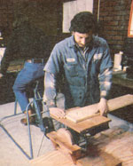
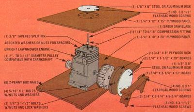

With a little ingenuity, you can put pedals to work in your wood shop:
In our last issue (see No. 68, page 134), we described how to generate DC electricity by connecting the basic cycle power chassis, as featured in MOTHER NO. 67, to an automobile alternator. (See page 116 to order back issues.) This time around, we're going to show you how to build a jim-dandy combination disk-sander/reciprocating-saw that fits the pedaled powerplant like a glove.
The backbone of our "treadle" tool is a worn-out upright lawnmower engine, the likes of which are available in just about any junkyard. If the unit you locate has belt drive, fine ... if not, you'll have to remove the chain sprocket and simply install a pulley that's compatible with the motor shaft.
Then take off your engine's cylinder head, carburetor, muffler, flywheel housing, and any other components that aren't part of the "working" block. Next, drill a 1/2" centered hole in the top of the piston and tap it to accept 1/4" pipe .. . before threading a 1/4" to 5/16" ball compression fitting into the tapped hole and snugging it down firmly.
Once that's done, take a 3/8" bolt and grind the threads from the last 3/8" of it to form a taper, then grip the fastener-end upin a vise, and hacksaw a vertical split down the center of the just-formed, coneshaped nub. Finally, cut the two "half rounds" from the rest of the bolt . . . these will function as the tapered split pins that will hold your saber saw blade in place.
Secure the reciprocating cutter by setting its mounting bayonet into the socket of the compression fitting and slipping the split cones-tapers down-into the semicircular openings on either side of the metal "tongue". You can then slide the nut over the blade and lock it tightly onto the fitting.
To make a flush cutting table, take a piece of 3/4" X 12" X 15" plywood and, with a 2-1/2" We raw, drill a centered opening 5 inches from one long edge. of the board. Now, using the discarded cylinder head-and its mounting bores-as a template, mark and drill four 5/16" holes into the platform, at points evenly surrounding the aperture, and countersink them 5/16 inch with a 5/8" bit. Next, take the 1/8" X 6" metal disk and drill a 1/2" opening at its central point . . . then align this hole over the 2-1/2" port in the wooden table, and trace the plate's circumference with a pencil. Finally, using the justdrawn line as a border, rout out all the wood within the circle to a depth of 1/8 inch, and use the original head bolts to fasten the plank to the top of the engine block. (To assure that the compression fitting won't strike the metal plate at the top of its upward stroke, place the piston in exactly that position, and then slip washers or nuts under the plywood platform to raise it slightly.) Now fasten the cover disk into its recess in the table with a pair of No. 6 X 1/2" flathead wood screws . . . after first countersinking the holes in the plate to keep the screw heads flush with the upper surface.
The other half of our tool is a disk sander, and you can easily attach this implement on the flywheel of your recycled "one lunger". To do so, lay the rotating counterweight flat on your work surface, then take the 3/4" X 8" circular plywood blank, center it over the flywheel, and drill three evenly spaced 1/4" holes through both components. Now countersink the bores slightly with a 1/2" bit, and cut a 1 "-diameter hole through the center of the wooden circle.
Next, secure the disk to the flywheel with three 1/4" X 1-1/2" bolts, and reinstall the counterweight on the crankshaft. The sandpaper can then be glued to a metal plate, which is-in turn-fastened to the plywood by means of three countersunk No. 6 X 1/2" flathead wood screws placed near the outer border of the metal circle. (You might also take this opportunity to wrap some duct tape around the flywheel to cover any sharp edges.)
At this point, mount the engine block on its 3/4" X 10" X 20" wooden base. Of course, since it's best if both the drive pulley and the sander extend beyond the platform slightlyso the stand won't inter fere with the belt or with your ability to smooth an oddly shaped piece of workyou might want to trim down the foundation's width accordingly. In any case, position the mechanism on the board, drill four 5/16" mounting holes in line with those already in the block's base, and install four 5/16" X 2" bolts to hold the engine in place.
With this accomplished, you can knock together a little sanding platform. Take your 3/4" X 3-1/4" X 13" board and remove a 1 " X 8-1/2" notch from the center of one of its sides. Then cut out a 3/16" X 3/4" X 3-1/4" groove-centered 2 inches from each endfrom one "face" of the board . . . place one of your 3/4" X 3-1/4" X 5-3/4" support pieces against one end of the sanding platform . . . and, with the miniature table held perpendicularly against the sanding wheel, scribe a line to indicate the angle to which you'll need to cut the support. Duplicate this angle at a spot 4-1/2 inches below the initial line, then mark a perpendicular from a point 1-1/4" behind the leading edge of the support to its base. Make your cuts on these lines, then trace the pattern on the second piece of wood and make similar cuts.
To secure the assembly to the mounting platform, simply fasten the sanding ledge to the supports with four No. 6 X 1 " flathead wood screws (countersunk to insure a smooth surface ) . . . then lock the legs to the base, using four No. 6 X 1-1/2" wood screws placed so that one enters each support from the front, and one passes into each from the base.
You can then complete the combination sander/cutter by tacking a couple of 3/4" X 1-1/2" X 20" wooden feet below each flank of the mounting platform. Once that's done, you'll be ready to bolt or clamp the tool to a convenient work surface, loop a belt between it and the cycle power chassis, and have at an appropriate piece of wood (with the help of a willing-and physically fit-friend, of course). And, if the idea of pedaling up your power doesn't strike your fancy, you can still use this two-in-one device by simply attaching an electric motor to the platform . . . and letting the power company do the work.
|
 |
 |
|